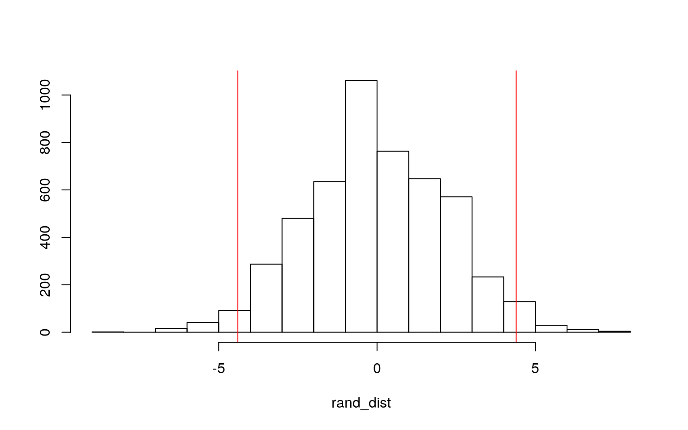

January 1, 0001
Modeling
Instructions
A knitted R Markdown document (preferably HTML) and the raw R Markdown file (as .Rmd) should both be submitted to Canvas by 11:59pm on the due date. These two documents will be graded jointly, so they must be consistent (i.e., don’t change the R Markdown file without also updating the knitted document). Knit an html copy too, for later! In the .Rmd file for Project 2, you can copy the first code-chunk into your project .Rmd file to get better formatting. Notice that you can adjust the opts_chunk$set(...) above to set certain parameters if necessary to make the knitting cleaner (you can globally set the size of all plots, etc). You can copy the set-up chunk in Project2.Rmd: I have gone ahead and set a few for you (such as disabling warnings and package-loading messges when knitting)!
Like before, I envision your written text forming something of a narrative structure around your code/output. All results presented must have corresponding code. Any answers/results/plots etc. given without the corresponding R code that generated the result will not be graded. Furthermore, all code contained in our project document should work properly. Please do not include any extraneous code or code which produces error messages. (Code which produces warnings is fine as long as you understand what the warnings mean.)
Find data:
Find one dataset with at least 5 variables (ideally more!) that you want to use to build models/test hypotheses. At least one should be categorical (with 2-5 groups, ideally; definitely fewer than 10) and at least two should be numeric (taking on more than 10 distinct values). Ideally, at least of your variables will be binary (if not, you will have to create one by discretizing a numeric or collapsing levels of a categorical). You will need a minimum of 40 observations (at least 10 observations for every explanatory variable you have, ideally 20+ observations/variable).
It is perfectly fine to use either dataset (or the merged dataset, or a subset of your variables) from Project 1. However, I might encourage you to diversify things a bit and choose a different dataset to work with (particularly if the variables did not reveal interesting associations in Project 1 that you want to follow up with). The only requirement/restriction is that you may not use data from any examples we have done in class or lab. It would be a good idea to pick more cohesive data this time around (i.e., variables that you actually thing might have a relationship you would want to test). Think more along the lines of your Biostats project.
Again, you can use data from anywhere you want (see bottom for resources)! If you want a quick way to see whether a built-in (R) dataset has binary and/or character (i.e., categorical) variables, check out this list: https://vincentarelbundock.github.io/Rdatasets/datasets.html.
Guidelines and Rubric
- 0. (5 pts) Introduce your dataset and each of your variables (or just your main variables if you have lots) in a paragraph. What are they measuring? How many observations?
This dataset, titled NCCTG Lung Cancer Data, contains information about survival times and the physical well-being of patients from the North Central Cancer Treatment Group who have advanced lung cancer. The dataset has 227 observations of 10 variables, and each observation corresponds to a different patient. There are 4 categorical variables: inst, status, sex, and ph.ecog. Institution refers to the patient's institution code, status refers to whether or not the patient died during the observation time of the study, sex refers to whether the patient is male or female, and ph.ecog refers to ECOG performance score as rated by a physician. ECOG performance status measures whether a patient is able to receive chemotherapy while maintaining an acceptable level of well-being; 0=asymptomatic, 1= symptomatic but completely ambulatory, 2= in bed <50% of the day, 3= in bed > 50% of the day but not bedbound, and 4 = bedbound. No patients in this dataset are in categories 3 or 4 for the ECOG test. There are 6 numerical variables: time, age, ph.karno, pat.karno, meal.cal, and wt.loss. Time refers to the patient's survival time in days, age refers to the patient's age in years, ph.karno refers to Karnofsky performance score (bad=0-good=100) rated by the physician, pat.karno refers to Karnofsky performance score as rated by patient, meal.cal refers to the number of kcal consumed at meals, and wt.loss corresponds to pounds of weight loss over a 6-month period.
- 1. (15 pts) Perform a MANOVA testing whether any of your numeric variables (or a subset of them, if including them all is unreasonable or doesn't make sense) show a mean difference across levels of one of your categorical variables (3). If they do, perform univariate ANOVAs to find response(s) showing a mean difference across groups (3), and perform post-hoc t tests to find which groups differ (3). Discuss the number of tests you have performed, calculate the probability of at least one type I error (if unadjusted), and adjust the significance level accordingly (bonferroni correction) before discussing significant differences (3). Briefly discuss MANOVA assumptions and whether or not they are likely to have been met (no need for anything too in-depth) (2).
#install.packages("survival")
library(survival)
lung1 <- lung %>% na.omit()
lung1 <- subset(lung1, ph.ecog!="3")
lung1 <- lung1%>%mutate(ph.ecog_f = as.factor(lung1$ph.ecog), .keep = "all")
lung1 <- lung1%>%mutate(sex_f = as.factor(lung1$sex), .keep = "all")
lung1 <- lung1%>%mutate(status_f = as.factor(lung1$status), .keep = "all")
man1<-manova(cbind(time, age, ph.karno, pat.karno, meal.cal, wt.loss)~ph.ecog, data=lung1)
summary(man1)## Df Pillai approx F num Df den Df Pr(>F)
## ph.ecog 1 0.70373 62.945 6 159 < 2.2e-16 ***
## Residuals 164
## ---
## Signif. codes: 0 '***' 0.001 '**' 0.01 '*' 0.05 '.' 0.1
' ' 1summary.aov(man1)## Response time :
## Df Sum Sq Mean Sq F value Pr(>F)
## ph.ecog 1 235812 235812 5.5181 0.02001 *
## Residuals 164 7008430 42734
## ---
## Signif. codes: 0 '***' 0.001 '**' 0.01 '*' 0.05 '.' 0.1
' ' 1
##
## Response age :
## Df Sum Sq Mean Sq F value Pr(>F)
## ph.ecog 1 1286.4 1286.36 16.558 7.319e-05 ***
## Residuals 164 12741.0 77.69
## ---
## Signif. codes: 0 '***' 0.001 '**' 0.01 '*' 0.05 '.' 0.1
' ' 1
##
## Response ph.karno :
## Df Sum Sq Mean Sq F value Pr(>F)
## ph.ecog 1 17915.6 17915.6 337.58 < 2.2e-16 ***
## Residuals 164 8703.7 53.1
## ---
## Signif. codes: 0 '***' 0.001 '**' 0.01 '*' 0.05 '.' 0.1
' ' 1
##
## Response pat.karno :
## Df Sum Sq Mean Sq F value Pr(>F)
## ph.ecog 1 11440 11439.6 71.23 1.593e-14 ***
## Residuals 164 26339 160.6
## ---
## Signif. codes: 0 '***' 0.001 '**' 0.01 '*' 0.05 '.' 0.1
' ' 1
##
## Response meal.cal :
## Df Sum Sq Mean Sq F value Pr(>F)
## ph.ecog 1 371042 371042 2.1741 0.1423
## Residuals 164 27989209 170666
##
## Response wt.loss :
## Df Sum Sq Mean Sq F value Pr(>F)
## ph.ecog 1 781 780.98 4.4435 0.03655 *
## Residuals 164 28824 175.76
## ---
## Signif. codes: 0 '***' 0.001 '**' 0.01 '*' 0.05 '.' 0.1
' ' 1pairwise.t.test(lung1$time, lung1$ph.ecog, p.adj="none")##
## Pairwise comparisons using t tests with pooled SD
##
## data: lung1$time and lung1$ph.ecog
##
## 0 1
## 1 0.824 -
## 2 0.015 0.013
##
## P value adjustment method: nonepairwise.t.test(lung1$age, lung1$ph.ecog, p.adj="none")##
## Pairwise comparisons using t tests with pooled SD
##
## data: lung1$age and lung1$ph.ecog
##
## 0 1
## 1 0.38949 -
## 2 3.8e-05 0.00014
##
## P value adjustment method: nonepairwise.t.test(lung1$ph.karno, lung1$ph.ecog, p.adj="none")##
## Pairwise comparisons using t tests with pooled SD
##
## data: lung1$ph.karno and lung1$ph.ecog
##
## 0 1
## 1 <2e-16 -
## 2 <2e-16 <2e-16
##
## P value adjustment method: nonepairwise.t.test(lung1$pat.karno, lung1$ph.ecog, p.adj="none")##
## Pairwise comparisons using t tests with pooled SD
##
## data: lung1$pat.karno and lung1$ph.ecog
##
## 0 1
## 1 0.013 -
## 2 9.7e-16 2.9e-12
##
## P value adjustment method: nonepairwise.t.test(lung1$wt.loss, lung1$ph.ecog, p.adj="none")##
## Pairwise comparisons using t tests with pooled SD
##
## data: lung1$wt.loss and lung1$ph.ecog
##
## 0 1
## 1 0.045 -
## 2 0.044 0.713
##
## P value adjustment method: noneThe MANOVA test was significant, so I rejected the H0 that the 6 dependent numeric variables were the same across asymptomatic (0), symptomatic but ambulatory (1), and bedridden patients (2) (F= 64.379, df= 6, p= < 2.2e-16).Univariate ANOVAs for each dependent variable were conducted as follow-up tests to the MANOVA, and the numeric variables time (p= 0.01333), age (p= 4.944e-05), ph.karno (p= 2.2e-16), pat.karno (p= 1.989e-14), and wt.loss (p= 0.02691) were all significant. I conducted 12 hypothesis tests in all (1 MANOVA, 6 ANOVA, 5 t-tests), which gives a type 1 error probability of 1-.95^12 = 0.460.To keep the overall type I error rate at .05, I need to use a= .05/12 = .00417. Post hoc analysis was performed conducting pairwise comparisons to determine which groups differed in time, age, ph.karno, pat.karno, or wt.loss. ____________ after adjusting for multiple comparisons (bonferroni a= .00417).
- 2. (10 pts) Perform some kind of randomization test on your data (that makes sense). The statistic can be anything you want (mean difference, correlation, F-statistic/ANOVA, chi-squared), etc. State null and alternative hypotheses, perform the test, and interpret the results (7). Create a plot visualizing the null distribution and the test statistic (3).
t.test(data=lung1, ph.karno~status)##
## Welch Two Sample t-test
##
## data: ph.karno by status
## t = 2.0903, df = 90.071, p-value = 0.03941
## alternative hypothesis: true difference in means is not
equal to 0
## 95 percent confidence interval:
## 0.2178906 8.5716677
## sample estimates:
## mean in group 1 mean in group 2
## 85.31915 80.92437lung1%>%group_by(status)%>%summarize(s=sd(ph.karno))%>%summarize(diff(s))## # A tibble: 1 x 1
## `diff(s)`
## <dbl>
## 1 0.870rand_dist<-vector()
for(i in 1:5000){
new<-data.frame(ph.karno=sample(lung1$ph.karno),status=lung1$status)
rand_dist[i]<-sd(new[new$status==1,]$ph.karno)-
sd(new[new$status==2,]$ph.karno)
}
mean(rand_dist< -0.8703849 | rand_dist> 0.8703849 ) ## [1] 0.5538{hist(rand_dist,main="",ylab=""); abline(v = c(0.8703849,-0.8703849),col="red")}
3. (35 pts) Build a linear regression model predicting one of your response variables from at least 2 other variables, including their interaction. Mean-center any numeric variables involved in the interaction.
- Interpret the coefficient estimates (do not discuss significance) (10)
- Plot the regression using
ggplot()using geom_smooth(method="lm"). If your interaction is numeric by numeric, refer to code in the slides to make the plot or check out theinteractionspackage, which makes this easier. If you have 3 or more predictors, just chose two of them to plot for convenience. (8) - Check assumptions of linearity, normality, and homoskedasticity either graphically or using a hypothesis test (4)
- Regardless, recompute regression results with robust standard errors via
coeftest(..., vcov=vcovHC(...)). Discuss significance of results, including any changes from before/after robust SEs if applicable. (8) - What proportion of the variation in the outcome does your model explain? (4)
lung1$ph.karno_c <- lung1$ph.karno - mean(lung1$ph.karno)
lung1$pat.karno_c <- lung1$pat.karno - mean(lung1$pat.karno)
fit<-lm( status~sex_f*ph.karno_c, data=lung1)
summary(fit)##
## Call:
## lm(formula = status ~ sex_f * ph.karno_c, data = lung1)
##
## Residuals:
## Min 1Q Median 3Q Max
## -0.8920 -0.4106 0.1985 0.2588 0.5894
##
## Coefficients:
## Estimate Std. Error t value Pr(>|t|)
## (Intercept) 1.794969 0.043263 41.490 < 2e-16 ***
## sex_f2 -0.205727 0.069691 -2.952 0.00363 **
## ph.karno_c -0.003017 0.003444 -0.876 0.38238
## sex_f2:ph.karno_c -0.007003 0.005479 -1.278 0.20301
## ---
## Signif. codes: 0 '***' 0.001 '**' 0.01 '*' 0.05 '.' 0.1
' ' 1
##
## Residual standard error: 0.4368 on 162 degrees of
freedom
## Multiple R-squared: 0.08252, Adjusted R-squared: 0.06553
## F-statistic: 4.857 on 3 and 162 DF, p-value: 0.002912 ggplot(lung1, aes(ph.karno_c,status, color = sex_f)) + geom_smooth(method = "lm", se = F, fullrange = T)
1.794969 - 0.205727 ## [1] 1.589242lung1%>%group_by(sex)%>%summarise(mean(status))## # A tibble: 2 x 2
## sex `mean(status)`
## <dbl> <dbl>
## 1 1 1.79
## 2 2 1.59#normality
resids<-fit$residuals
shapiro.test(resids)##
## Shapiro-Wilk normality test
##
## data: resids
## W = 0.791, p-value = 3.964e-14#linearity & homoskedasticity
library(sandwich); library(lmtest)
bptest(fit)##
## studentized Breusch-Pagan test
##
## data: fit
## BP = 5.6462, df = 3, p-value = 0.1302coeftest(fit, vcov = vcovHC(fit))##
## t test of coefficients:
##
## Estimate Std. Error t value Pr(>|t|)
## (Intercept) 1.7949693 0.0405617 44.2529 < 2.2e-16 ***
## sex_f2 -0.2057272 0.0734829 -2.7997 0.005738 **
## ph.karno_c -0.0030166 0.0032839 -0.9186 0.359658
## sex_f2:ph.karno_c -0.0070027 0.0055407 -1.2639 0.208094
## ---
## Signif. codes: 0 '***' 0.001 '**' 0.01 '*' 0.05 '.' 0.1
' ' 1fit1<-lm( pat.karno_c~sex_f*ph.karno_c, data=lung1)
summary(fit1)##
## Call:
## lm(formula = pat.karno_c ~ sex_f * ph.karno_c, data =
lung1)
##
## Residuals:
## Min 1Q Median 3Q Max
## -42.914 -7.331 0.492 10.239 28.757
##
## Coefficients:
## Estimate Std. Error t value Pr(>|t|)
## (Intercept) -0.98690 1.27176 -0.776 0.439
## sex_f2 2.59391 2.04865 1.266 0.207
## ph.karno_c 0.60881 0.10124 6.014 1.17e-08 ***
## sex_f2:ph.karno_c 0.07589 0.16105 0.471 0.638
## ---
## Signif. codes: 0 '***' 0.001 '**' 0.01 '*' 0.05 '.' 0.1
' ' 1
##
## Residual standard error: 12.84 on 162 degrees of freedom
## Multiple R-squared: 0.2929, Adjusted R-squared: 0.2798
## F-statistic: 22.37 on 3 and 162 DF, p-value: 3.589e-12**1.794969 (alive = 1, dead = 2) is the predicted status for male patients (sex = 1) with an average Karnofsky performance score as rated by a physician. Among patients with an average Karnofsky performance score as rated by a physician, females have a predicted status that is 0.205727 less than males ( 1.794969 - 0.205727 = 1.589242). For every one point increase in Karnofsky score as rated by a physician, male patients have a predicted status 0.003017 less than male patients with an average physician-rated Karnofsky score. The slope of physician-rated Karnofsky score on status is 0.007003 lower for females than for males.
The assumptions for linearity and homoskedasticity were met, but the assumption for normality was violated. Although linearity and homoskedasticity were met, the regression results were recomputed with robust standard errors. This adjusted the SEs to correct for violations of homoskedasticity; the SEs for sex and the interaction between sex and ph.karno increased while the SEs for the intercept and ph.karno decreased. Consequently, the p-value increased slightly for both sex and the interaction between sex and ph.karno but decreased slightly for intercept and ph.karno.
The full model explains 0.08252 of the variation in status.**
- 4. (5 pts) Rerun same regression model (with the interaction), but this time compute bootstrapped standard errors (either by resampling observations or residuals). Discuss any changes you observe in SEs and p-values using these SEs compared to the original SEs and the robust SEs)
boot_dat<- sample_frac(lung1, replace=T)
samp_distn<-replicate(5000, {
boot_dat <- sample_frac(lung1, replace=T)
fit <- lm(status~sex_f*ph.karno_c, data=boot_dat)
coef(fit)
})
coeftest(fit)[,1:2]## Estimate Std. Error
## (Intercept) 1.794969261 0.043263193
## sex_f2 -0.205727203 0.069691466
## ph.karno_c -0.003016637 0.003444038
## sex_f2:ph.karno_c -0.007002688 0.005478647coeftest(fit, vcov=vcovHC(fit))[,1:2]## Estimate Std. Error
## (Intercept) 1.794969261 0.040561656
## sex_f2 -0.205727203 0.073482888
## ph.karno_c -0.003016637 0.003283865
## sex_f2:ph.karno_c -0.007002688 0.005540689samp_distn %>% t %>% as.data.frame %>% summarize_all(sd)## (Intercept) sex_f2 ph.karno_c sex_f2:ph.karno_c
## 1 0.04017814 0.07248681 0.003160583 0.005475503The SEs computed by resampling observations are very close compared to both the original SEs and the robust SEs.
5. (25 pts) Fit a logistic regression model predicting a binary variable (if you don't have one, make/get one) from at least two explanatory variables (interaction not necessary).
- Interpret coefficient estimates in context (10)
- Report a confusion matrix for your logistic regression (2)
- Compute and discuss the Accuracy, Sensitivity (TPR), Specificity (TNR), Precision (PPV), and AUC of your model (5)
- Using ggplot, make a density plot of the log-odds (logit) colored/grouped by your binary outcome variable (3)
- Generate an ROC curve (plot) and calculate AUC (either manually or with a package); interpret (5)
data<-lung1%>%mutate(y=ifelse(status_f=="2",1,0))
head(data)## inst time status age sex ph.ecog ph.karno pat.karno
meal.cal wt.loss ph.ecog_f sex_f status_f
## 1 3 455 2 68 1 0 90 90 1225 15 0 1 2
## 2 5 210 2 57 1 1 90 60 1150 11 1 1 2
## 3 12 1022 1 74 1 1 50 80 513 0 1 1 1
## 4 7 310 2 68 2 2 70 60 384 10 2 2 2
## 5 11 361 2 71 2 2 60 80 538 1 2 2 2
## 6 1 218 2 53 1 1 70 80 825 16 1 1 2
## ph.karno_c pat.karno_c y
## 1 7.831325 10.3614458 1
## 2 7.831325 -19.6385542 1
## 3 -32.168675 0.3614458 0
## 4 -12.168675 -19.6385542 1
## 5 -22.168675 0.3614458 1
## 6 -12.168675 0.3614458 1fit2<-glm(y~sex_f + ph.karno, data=data, family="binomial")
coeftest(fit2)##
## z test of coefficients:
##
## Estimate Std. Error z value Pr(>|z|)
## (Intercept) 4.025216 1.311795 3.0685 0.002152 **
## sex_f2 -1.022554 0.360484 -2.8366 0.004559 **
## ph.karno -0.031888 0.015106 -2.1110 0.034774 *
## ---
## Signif. codes: 0 '***' 0.001 '**' 0.01 '*' 0.05 '.' 0.1
' ' 1exp(coef(fit2))## (Intercept) sex_f2 ph.karno
## 55.9924294 0.3596750 0.9686146probs<-predict(fit2,type="response")
table(predict=as.numeric(probs>.5),truth=data$y)%>%addmargins## truth
## predict 0 1 Sum
## 0 7 3 10
## 1 40 116 156
## Sum 47 119 166class_diag <- function(probs,truth){
#CONFUSION MATRIX: CALCULATE ACCURACY, TPR, TNR, PPV
tab<-table(factor(probs>.5,levels=c("FALSE","TRUE")),truth)
acc=sum(diag(tab))/sum(tab)
sens=tab[2,2]/colSums(tab)[2]
spec=tab[1,1]/colSums(tab)[1]
ppv=tab[2,2]/rowSums(tab)[2]
f1=2*(sens*ppv)/(sens+ppv)
if(is.numeric(truth)==FALSE & is.logical(truth)==FALSE) truth<-as.numeric(truth)-1
#CALCULATE EXACT AUC
ord<-order(probs, decreasing=TRUE)
probs <- probs[ord]; truth <- truth[ord]
TPR=cumsum(truth)/max(1,sum(truth))
FPR=cumsum(!truth)/max(1,sum(!truth))
dup<-c(probs[-1]>=probs[-length(probs)], FALSE)
TPR<-c(0,TPR[!dup],1); FPR<-c(0,FPR[!dup],1)
n <- length(TPR)
auc<- sum( ((TPR[-1]+TPR[-n])/2) * (FPR[-1]-FPR[-n]) )
data.frame(acc,sens,spec,ppv,f1,auc)}
class_diag(probs, data$y)## acc sens spec ppv f1 auc
## 1 0.7409639 0.9747899 0.1489362 0.7435897 0.8436364
0.6664581logit<-function(p)log(odds(p))
data$logit<-predict(fit2)
data %>% ggplot(aes(logit, fill=status_f))+geom_density(alpha=.3)+
geom_vline(xintercept=0,lty=2)
library(plotROC)
ROC<-ggplot(data)+geom_roc(aes(d=y,m=probs), n.cuts=0)
ROC**Controlling for physician-rated Karnofsky score, there is a significant effect of sex on reported death (p = 0.004559). The odds ratio is 0.3596750, so females are 64% times less likely than men to die during the observation period when physician-rated Karnofsky score is held constant. Controlling for sex, there is a significant effect of physician-rated Karnofsky score on reported death (p = 0.034774). Every one-unit increase in Karnofsky score multiplies the odds of reported death by 0.9686146, so the odds of reported death decrease by 3.1% for each additional Karnofsky performance point.
6. (25 pts) Perform a logistic regression predicting the same binary response variable from ALL of the rest of your variables (the more, the better!)
- Fit model, compute in-sample classification diagnostics (Accuracy, Sensitivity, Specificity, Precision, AUC), and interpret (5)
- Perform 10-fold (or repeated random sub-sampling) CV with the same model and report average out-of-sample classification diagnostics (Accuracy, Sensitivity, Specificity, Precision, and AUC); interpret AUC and compare with the in-sample metrics (10)
- Perform LASSO on the same model/variables. Choose lambda to give the simplest model whose accuracy is near that of the best (i.e.,
lambda.1se). Discuss which variables are retained. (5) - Perform 10-fold CV using only the variables lasso selected: compare model's out-of-sample AUC to that of your logistic regressions above (5)
lung2 <- data %>% select(-status, -status_f, -sex_f, -ph.karno_c, -pat.karno_c, -logit)
fit3 <- glm(y ~ ., data = lung2, family = "binomial")
prob <- predict(fit3, type = "response")
class_diag(prob, data$y)## acc sens spec ppv f1 auc
## 1 0.7650602 0.9411765 0.3191489 0.7777778 0.851711
0.7189344set.seed(1234)
k = 10
data1 <- lung2 %>% sample_frac #put rows of dataset in random order
folds <- ntile(1:nrow(data1), n = 10) #create fold labels
diags <- NULL
for (i in 1:k) {
train <- data1[folds != i, ] #create training set (all but fold i)
test <- data1[folds == i, ] #create test set (just fold i)
truth <- test$y #save truth labels from fold i
fit4 <- glm(y ~ ., data = train, family = "binomial")
probs <- predict(fit4, newdata = test, type = "response")
diags <- rbind(diags, class_diag(probs, truth))
}
summarize_all(diags, mean)## acc sens spec ppv f1 auc
## 1 0.7356618 0.9261905 0.2869048 0.7633657 0.8315201
0.6269963library(glmnet)
set.seed(1234)
lung2_preds <- -model.matrix(y ~ ., data = lung2)[, -1]
response <- as.matrix(lung2$y)
cv <- cv.glmnet(lung2_preds, response, family = "binomial")
lasso_fit <- glmnet(lung2_preds, response, family = "binomial",
lambda = cv$lambda.1se)
coef(lasso_fit)## 12 x 1 sparse Matrix of class "dgCMatrix"
## s0
## (Intercept) 0.9588689
## inst .
## time .
## age .
## sex 0.1046635
## ph.ecog -0.1240922
## ph.karno .
## pat.karno .
## meal.cal .
## wt.loss .
## ph.ecog_f1 .
## ph.ecog_f2 .set.seed(1234)
k = 10
data <- lung2 %>% sample_frac #put rows of dataset in random order
folds <- ntile(1:nrow(data), n = 10) #create fold labels
diags <- NULL
for (i in 1:k) {
train <- data[folds != i, ] #create training set (all but fold i)
test <- data[folds == i, ] #create test set (just fold i)
truth <- test$y #save truth labels from fold i
fit5 <- glm(y ~ sex + ph.ecog,
data = train, family = "binomial")
probs <- predict(fit5, newdata = test, type = "response")
diags <- rbind(diags, class_diag(probs, truth))
}
diags %>% summarize_all(mean)## acc sens spec ppv f1 auc
## 1 0.7716912 0.9595238 0.3261905 0.7803571 0.8562922
0.7049199The variables sex and ph.ecog were retained.
Where do I find data again?
You can choose ANY datasets you want that meet the above criteria for variables and observations. You can make it as serious as you want, or not, but keep in mind that you will be incorporating this project into a portfolio webpage for your final in this course, so choose something that really reflects who you are, or something that you feel will advance you in the direction you hope to move career-wise, or something that you think is really neat, or whatever. On the flip side, regardless of what you pick, you will be performing all the same tasks, so it doesn't end up being that big of a deal.
If you are totally clueless and have no direction at all, log into the server and type
data(package = .packages(all.available = TRUE))This will print out a list of ALL datasets in ALL packages installed on the server (a ton)! Scroll until your eyes bleed! Actually, do not scroll that much... To start with something more manageable, just run the command on your own computer, or just run data() to bring up the datasets in your current environment. To read more about a dataset, do ?packagename::datasetname.
If it is easier for you, and in case you don't have many packages installed, a list of R datasets from a few common packages (also downloadable in CSV format) is given at the following website: https://vincentarelbundock.github.io/Rdatasets/datasets.html.
A good package to download for fun/relevant data is
fivethiryeight. Runinstall.packages("fivethirtyeight"),load the packages withlibrary(fivethirtyeight), rundata(), and then scroll down to view the datasets. Here is an online list of all 127 datasets (with links to the 538 articles). Lots of sports, politics, current events, etc.If you have already started to specialize (e.g., ecology, epidemiology) you might look at discipline-specific R packages (vegan, epi, respectively). We will be using some tools from these packages later in the course, but they come with lots of data too, which you can explore according to the directions above
However, you emphatically DO NOT have to use datasets available via R packages! In fact, I would much prefer it if you found the data from completely separate sources and brought them together (a much more realistic experience in the real world)! You can even reuse data from your SDS328M project, provided it shares a variable in common with other data which allows you to merge the two together (e.g., if you still had the timestamp, you could look up the weather that day: https://www.wunderground.com/history/). If you work in a research lab or have access to old data, you could potentially merge it with new data from your lab!
Here is a curated list of interesting datasets (read-only spreadsheet format): https://docs.google.com/spreadsheets/d/1wZhPLMCHKJvwOkP4juclhjFgqIY8fQFMemwKL2c64vk/edit
Here is another great compilation of datasets: https://github.com/rfordatascience/tidytuesday
Here is the UCI Machine Learning Repository: https://archive.ics.uci.edu/ml/index.php
Here is another good general place to look: https://www.kaggle.com/datasets
To help narrow your search down or to see interesting variable ideas, check out https://www.tylervigen.com/spurious-correlations. This is the spurious correlations website, and it is fun, but if you look at the bottom of each plot you will see sources for the data. This is a good place to find very general data (or at least get a sense of where you can scrape data together from)!
If you are interested in medical data, check out www.countyhealthrankings.org
If you are interested in scraping UT data, they make loads of data public (e.g., beyond just professor CVs and syllabi). Check out all the data that is available in the statistical handbooks: https://reports.utexas.edu/statistical-handbook
Broader data sources:
Data.gov 186,000+ datasets!
Social Explorer is a nice interface to Census and American Community Survey data (more user-friendly than the government sites). May need to sign up for a free trial.
U.S. Bureau of Labor Statistics
Gapminder, data about the world.
...